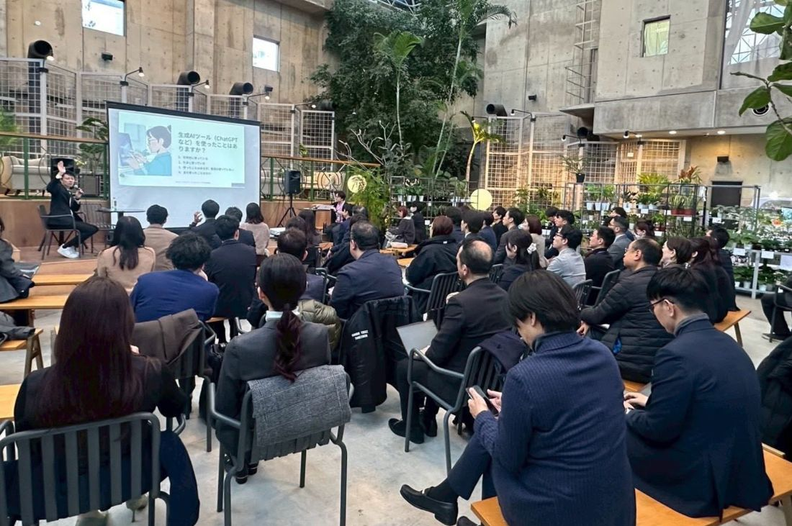
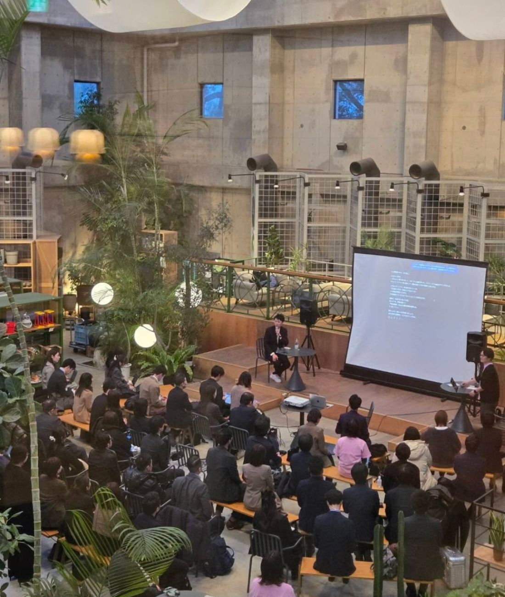

2026年1月28日、Real Conference 2026 TechGALAを開催いたしました。
ご参加・ご登壇いただいた皆さま、誠にありがとうございました。


第1部では、生成AIを「概念」ではなく、ウェディングの現場で即座に活用可能な視点から学ぶことができました。業務効率化に留まらない、多様な可能性が示されました。「AIとは何か」という一般論ではなく、「明日、自分の現場でどう使えるか」という具体に踏み込めたことが、大きな収穫でした。
生成AIは、特別な技術ではありません。適切に理解し、設計することで、ウェディングにおける価値提供の質そのものを高め得る存在である——。そのことを、改めて認識する時間となりました。
「難しそう」「自分には関係ない」と身構えていた方も、一歩を踏み出すきっかけを得られたのではないでしょうか。
第2部のパネルディスカッションでは、より具体的な活用方法に加えて、少子化・人材不足といった構造的課題を踏まえながら、これからのウェディングに求められる役割や未来像について語り合いました。
議論の中で、繰り返し立ち返ったのは、この一点でした。
テクノロジーは、目的ではなく手段である。
人の選択や想いに寄り添うウェディングだからこそ、今、何を取り入れ、何を守るのか。効率化できるところは大胆に効率化し、しかし人の手と心でなければ届けられない価値は、決して手放さない。その線引きを、一人ひとりが考える必要があります。
業界の現在地と、これからを、静かに見つめ直す機会となりました。
変わりゆく時代のなかで、変えるべきものと、守るべきもの。その両方を見据えながら、私たち愛知ウェディング協議会は、100年後も続くウェディングに向けて、歩みを進めてまいります。
ご参加・ご登壇いただいた皆さま、改めて、誠にありがとうございました。